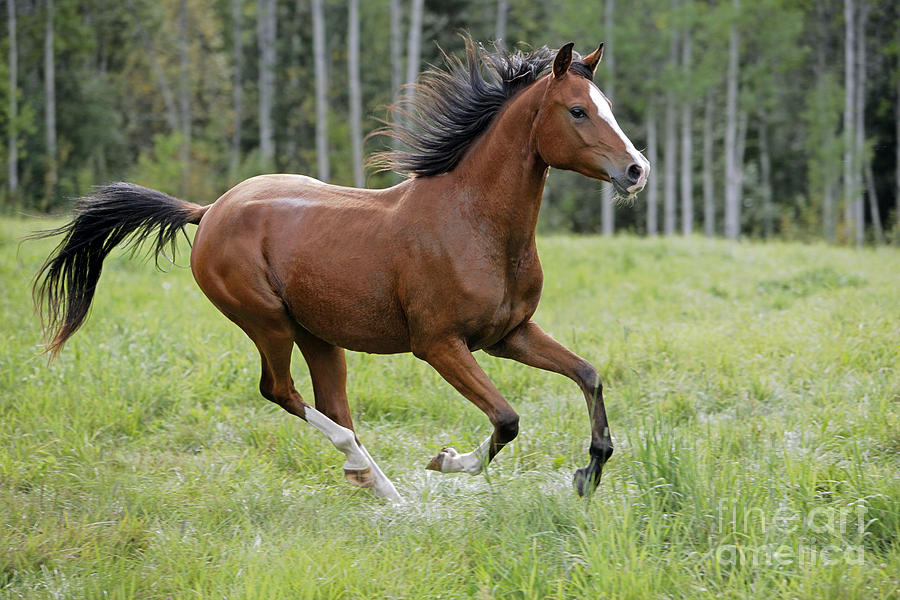
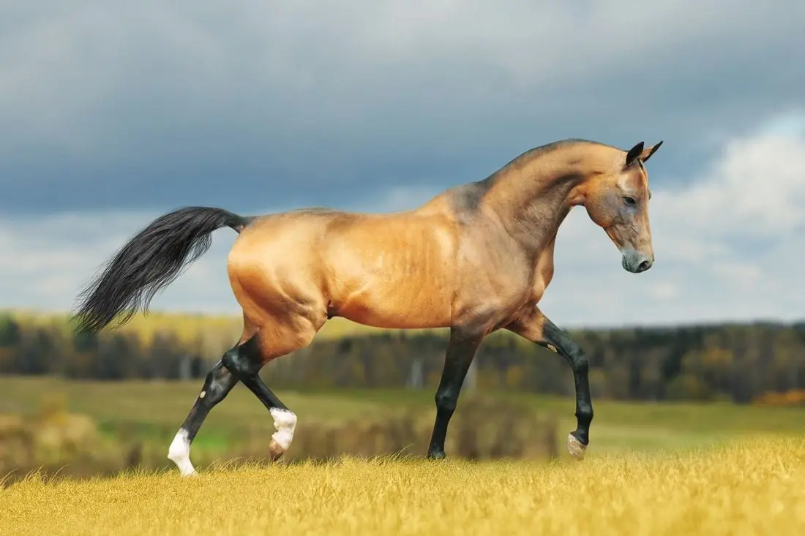
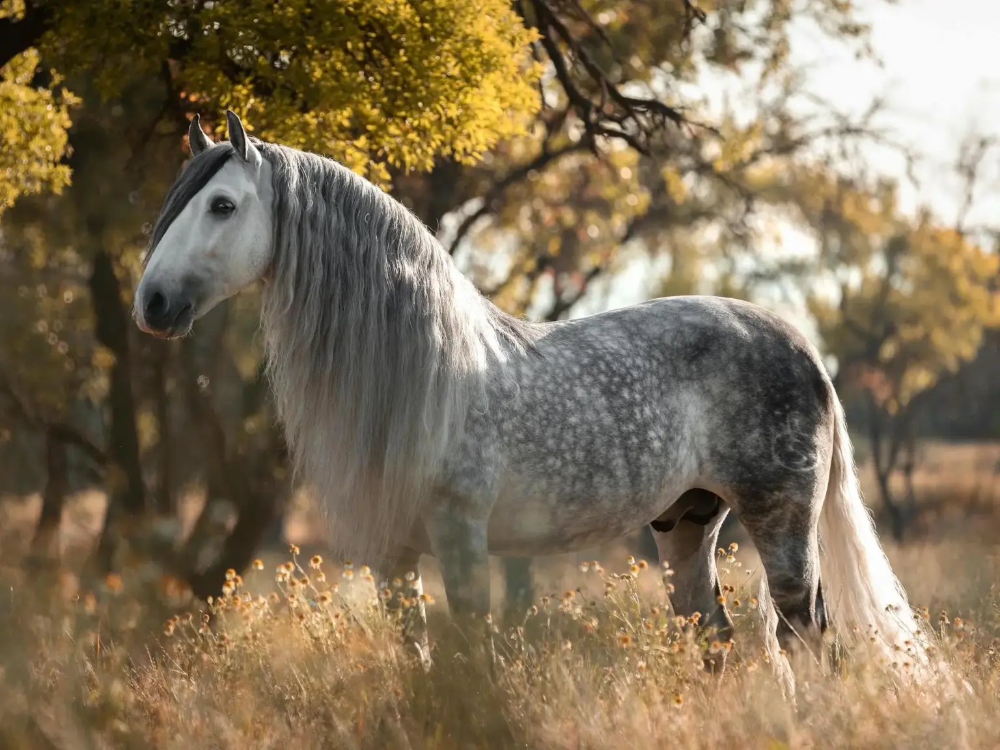
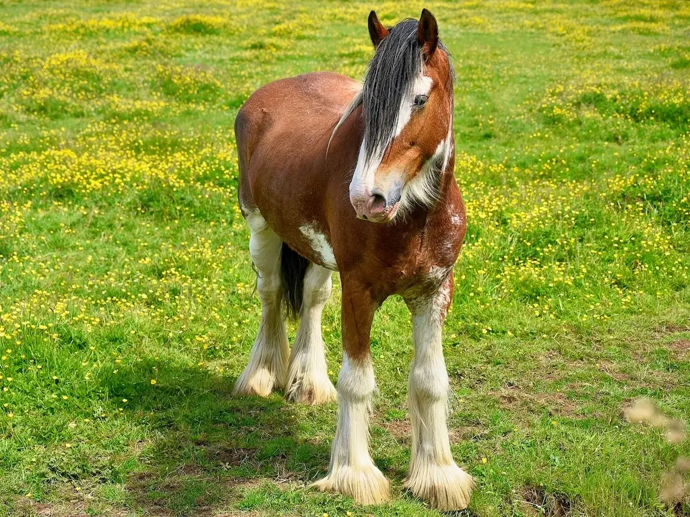
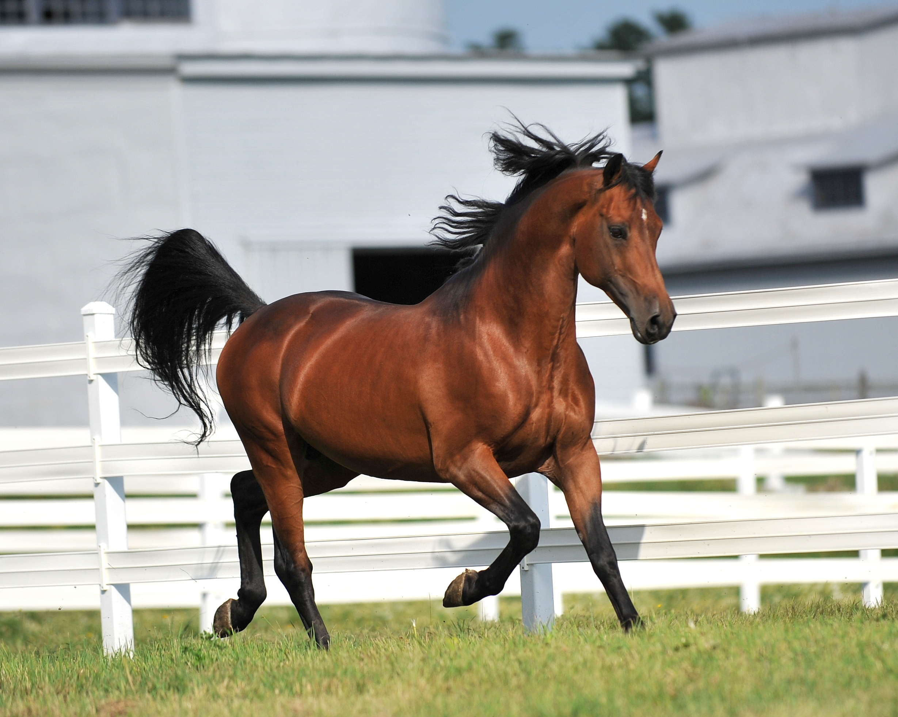

World Horse Breeds Encyclopedia
Explore the history and characteristics of amazing horse breeds from all over the world, from the plains of Andalusia to the deserts of the Arabian Peninsula

Arabian PeninsulaArabian Horse
Many modern breeds owe some of their genetics to the Arabian horse. The beautiful and mighty Arabian is among the fountainheads of the World’s horse breeds.
 England
England
Thoroughbred Horse
Few breeds, (besides perhaps their fathers, the Arabian and the Andalusian) have traveled as far and as wide as the English (or British) Thoroughbred animals have.
 United States
United States
American Quarter Horse
Perhaps most well known for their association with Cowboys of the wild west, the Quarter horse is a symbol of American horsemanship.

TurkmenistanAkhal Teke Horse
Known for their greyhound-like appearance and coats that often gleam with a metallic shimmer, the Akhal-Teke horse is built for speed.
 United States
United States
American Mustang Horse
The American mustang is said to symbolize the freedom of the wild west of the Americas. The word comes from Spanish "mestena".
 United States
United States
American Paint Horse
The paint is a performance type color breed and are often bred exclusively for their spotted pattern. Only Thoroughbred or Quarter Horse lines allowed.

SpainAndalusian Horse
The Andalusian is up there with the Arabian when it comes to purity and length of bloodline. Easily a grandfather of modern horse breeds.
 United States
United States
Appaloosa Horse
Known for their flamboyant spotted patterns, the Appaloosa is a color breed classified based on color genetics.

ScotlandClydesdale Horse
Considered the pride of Scotland, the Clydesdale is a heavy draft breed native to Lanarkshire in Scotland.
 Netherlands
Netherlands
Friesian Horse
Also called Friese paard, Friesians are noted for their flashy appearance and movement. They are ideal for showring or field.
 Austria
Austria
Lipizzaner Horse
The Lipizzaner is perhaps most well known for their fine performing stallions from the Spanish Riding School in Vienna.

United StatesMorgan Horse
The first documented American breed, Morgan horses owe their lineage to the original stud, Figure and owner Justin Morgan.